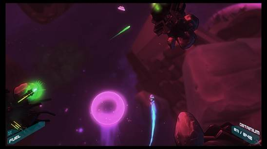
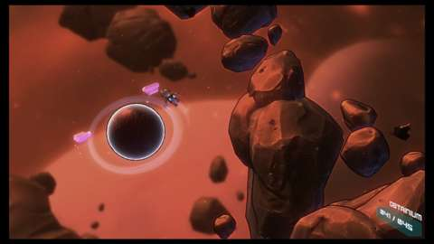
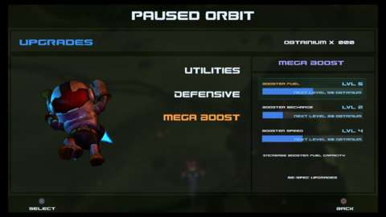

You’d think that being alone and adrift in outer space, with neither a ship nor a way to communicate with civilization, would be a slow affair (and almost certainly lead to a depressing death). You might expect to gradually float through the void, pondering your life choices as you starve to death. According to Lost Orbit, however, you can make it home in one piece as long as you hurtle past asteroids, orbit some planets, avoid some lasers, and make a robot friend along the way.
You are Harrison, a maintenance worker sent out alone to repair a com relay far from civilization. While making the repairs, your ship blows up, leaving you with nothing but a spacesuit that evidently has an infinite supply of thruster fuel. At first glance, Lost Orbit resembles an old-school arcade shoot-em-up. You can only move left and right at the bottom of the screen as the action automatically scrolls forward. The biggest difference, though, is that there is no shooting here, only dodging. You want a high score at the end of a level? Then you're going to have to dodge stuff while moving really fast.

Space into dreams.
The breakneck speeds you can reach in Lost Orbit evoke some of the same excitement you might get from a fast, arcade-style racing game. Boosting and zig-zagging your way through clumps of asteroids and other obstacles isn't too different from weaving through traffic in a game like Burnout, and it brings with it the same risk: If you collide with a hard surface, the result is going to be messy. Moving rapidly through tight, dangerous spaces is exhilarating, but a slight twitch in the wrong direction could mean instant death.
It's not just chunks of rock you have to worry about. As you make your way home, you encounter old machinery, lasers, aliens, and more potentially deadly perils. Then there are the objects that aren't necessarily deadly but still affect your flight path, like wormholes that teleport you across the screen, pulsars that push you away, gas giants that give you a boost of speed, planets you can orbit around, and more. Oh, and did you think you'd only be dodging everything? You also must collect bright purple pieces of "obtainium," which contribute to your score and allow you to buy permanent upgrades.

Way to orbit.
So there's a lot going on, but thankfully, moving around feels natural, though it may not be what you expect at first. Your character is flying through space in an Iron Man-like fashion. When you tilt the analog stick left or right, you actually tilt his body left or right in the same way you might bank an airplane (albeit a very agile one). Tilt hard enough, and you actually begin to loop around, allowing you to do a quick 180 if you know you don't have room to dodge an obstacle. It doesn't take long to get a handle on how to move exactly the way you want, giving you great precision even at high speeds.
One clever method for getting out of harm's way is to wrap around the screen. If you venture off the right side of the screen, you re-appear on the left and vice versa. If wrapping doesn't provide a large enough safety net, you can spend the obtanium you collect on a few new abilities, including a faster boost (one that's more limited in its usage, making it more like nitrous in a racing game); a barrel roll you can use to move left and right more quickly; and the ability to slow down, which is a vital skill to have while zooming through space. You can also buy the game's lone offensive ability: a bomb that blows up certain obstacles in your immediate vicinity.
When everything comes together and your reflexes are sharp, the speed and precision of Lost Orbit's 2D gameplay would make Sonic the Hedgehog jealous. Boosting through a cluster of asteroids, narrowly dodging turret fire, orbiting around one planet to refill your boost meter then dashing through another to get an extra burst of speed...there's a lot of timing to get down, but when you nail it, everything feels fluid. The sense of accomplishment you get when you make it through a level while barely slowing down is addicting.

Spend obtanium to obtain abilities!
It also looks great in motion, making good use of subtle but effective character animations combined with flashy colors and visual effects. Even dying has its own special touch. There are plenty of death animations (usually of the over-the-top comedic violence variety) to marvel at, provided you don't hit the reset button as quickly as possible every time you make a mistake.
The story has a striking element of charm to it. Harrison's adventure is narrated by a similarly lonesome robot with some humorously tragic (and sometimes touching) things to say. The downside is that while this commentary is interesting the first time through, it's not as appealing when you replay levels multiple times either to improve on your last performance or simply because you keep dying. Hearing the same lines of dialogue repeated over and over grows tiresome quickly, and there doesn't seem to be any way to turn the narration off.
When everything comes together and your reflexes are sharp, the speed and precision of Lost Orbit's 2D gameplay would make Sonic the Hedgehog jealous.
Levels in Lost Orbit are short and usually beatable in a couple of minutes at most. Checkpoints scattered throughout them make completing the game a short, relatively easy task. The game's roughly 40 stages can be completed within two or three hours if you're not worried about how you're ranked at the end of each one. If you do want to be rewarded with a platinum medal for each level (or a high spot on the time trial leaderboards), though, you'll want to get through each one as quickly as possible without dying while collecting every piece of obtanium along the way. This is a fun challenge, though there's a bit of frustration involved every time you want to try a stage again. While there's a button dedicated to restarting a stage quickly, the reset isn't instant, forcing you to wait a few seconds every time you want to go back to the beginning of a stage. That might not sound too bad, but if you keep messing up halfway through a level, it's frustrating to not be able to go back instantly. Games with similar time-based leaderboards, like Super Meat Boy, have spoiled us with their instant restart abilities.
Due in part to its brevity, Lost Orbit isn't the most memorable of adventures. You barrel through its levels quickly, and unless you want to try for faster time trial scores, there's not a lot to come back for. Still, the rush of speed and the simple charms of the animation and narration make this game a blast while it lasts.